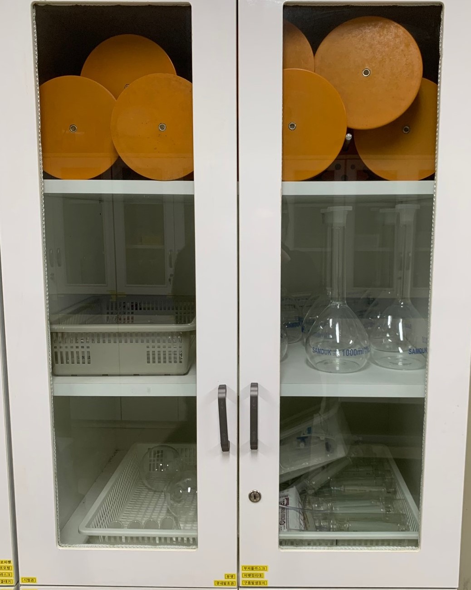
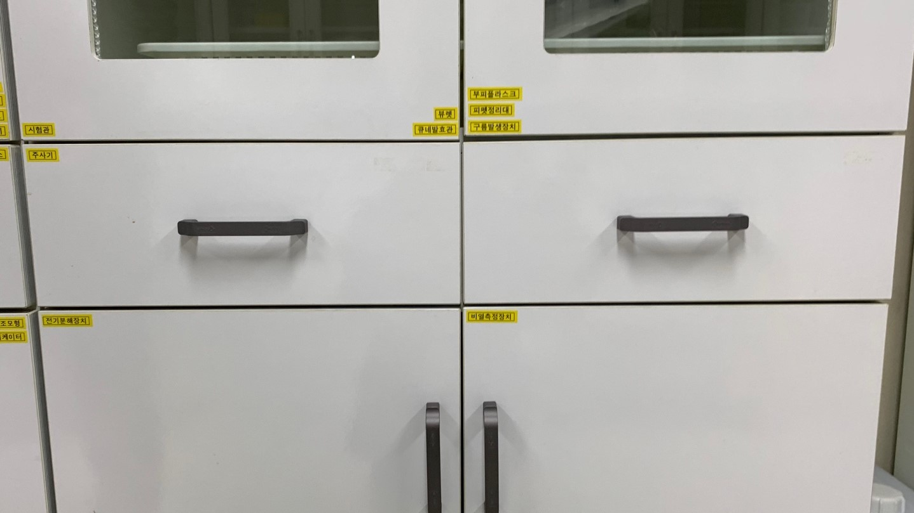
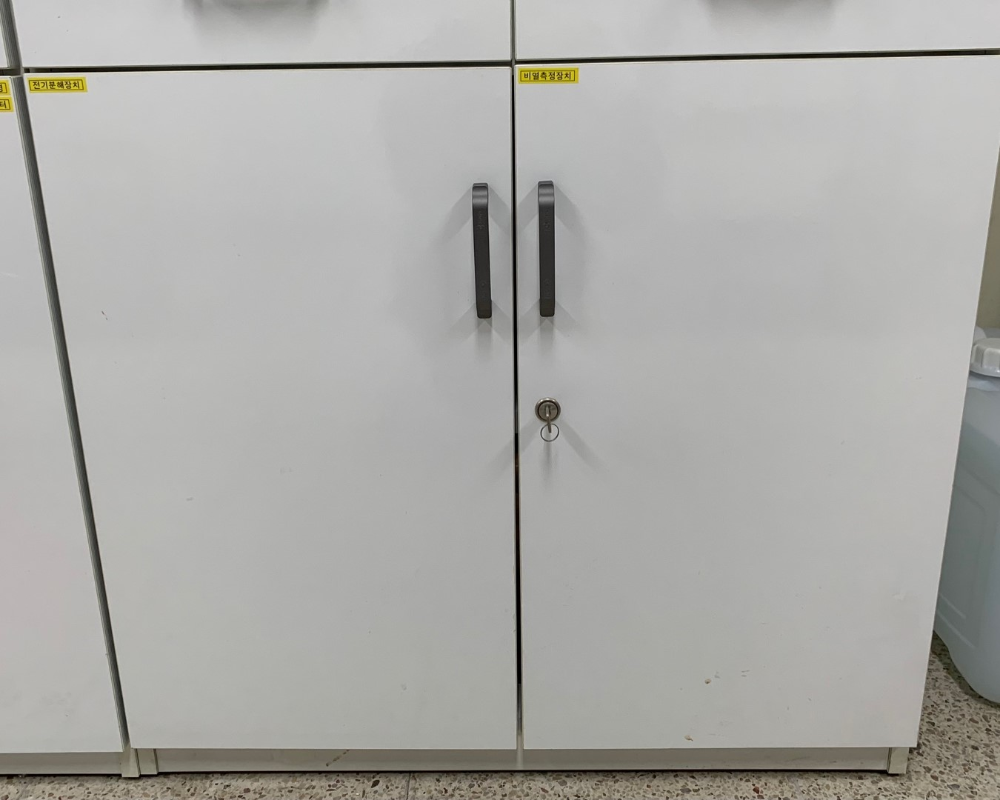

6번 서랍
|  | ①시험관: 화학 실험에서, 어떤 물질의 성질이나 반응 따위를 시험하는 데 쓰는 유리관. 한쪽이 막힌 길쭉하고 투명한 작은 유리관 ②뷰렛: 적정따위에서, 떨어뜨리는 액체의 부피를 측정하는 데 쓰는 실험 기구. 정밀한 눈금이 그려진 유리로 된 직경이 일정한 관으로 하단은 가늘고 용액을 작은 방울로 떨어뜨릴 수 있도록 되어 있음. ③큐네발효관 : 효모균을 이용하여 발효된 이산화탄소 양을 측정하기 위한 실험기구 ④부피 플라스크 : 액체의 부피를 정확하게 측정하는 기구로 주로 표준 용액이나 묽은 농도 용액을 만들 때 주로 사용함 ⑤구름발생장치: 인공적으로 공기를 팽창시키면 플라스크 내부가 뿌옇게 흐려지는 현상을 이용하여 구름이 발생하는 모양을 볼 수 있도록 만든 장치 ⑥피펫정리대 |
|  | ①주사기ㅤㅤㅤㅤㅤㅤㅤㅤㅤㅤㅤㅤㅤㅤㅤㅤㅤㅤㅤㅤㅤㅤㅤㅤㅤㅤㅤㅤㅤㅤㅤㅤㅤㅤㅤㅤㅤㅤㅤㅤㅤㅤㅤㅤㅤㅤㅤㅤㅤㅤㅤㅤㅤㅤㅤㅤㅤㅤㅤㅤㅤㅤㅤㅤㅤㅤㅤㅤㅤㅤㅤㅤㅤㅤㅤㅤㅤㅤㅤㅤㅤㅤㅤ |
|  | ①전기분해장치: 전기 분해를 해주는 장치로 전기분해를 통해 생산하고자 하는 물질은 전해질과 다른 물리적 형태를 띨 수 있음 ②비열측정장치: 같은 중량의 금속에 비열실험이나 비중 측정에 사용되는 기구ㅤㅤㅤㅤㅤㅤㅤㅤㅤㅤㅤㅤㅤㅤㅤㅤㅤㅤㅤㅤㅤㅤㅤㅤㅤㅤㅤㅤㅤㅤㅤㅤㅤㅤㅤㅤㅤㅤㅤㅤㅤㅤㅤㅤㅤㅤㅤ |